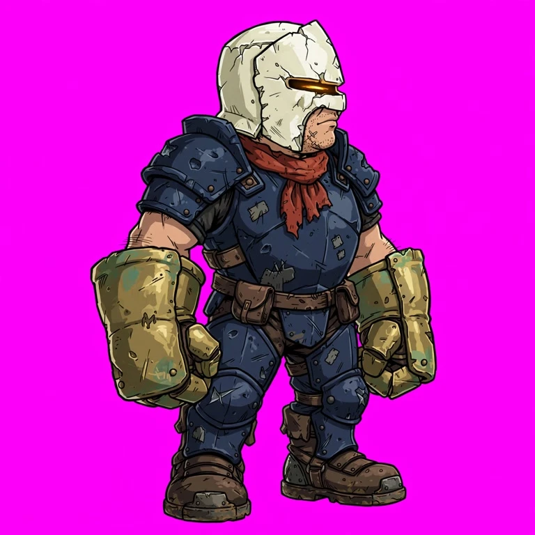
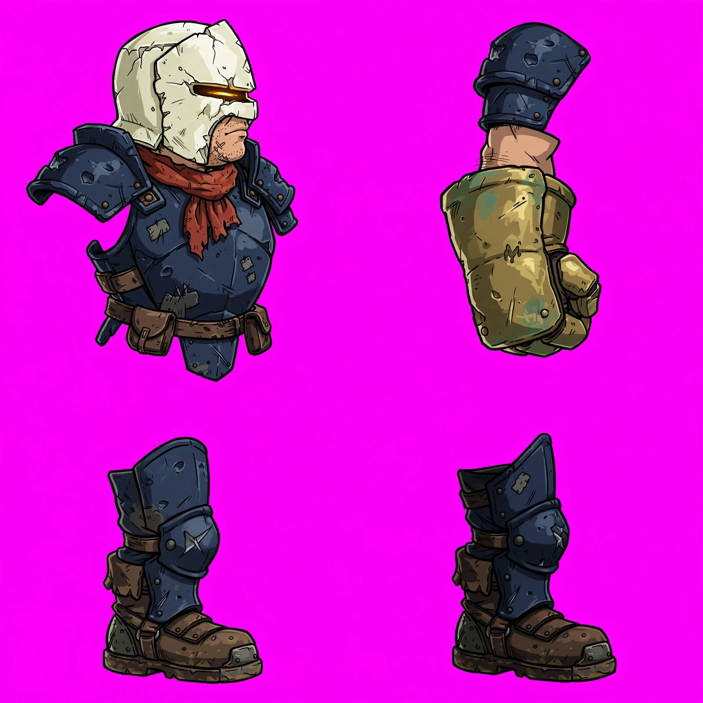

What the workflows made.
Saved images, video and a song, with the inputs that produced them. Viewing is free. Run your own version with your NanoGPT key and balance.
Game character kit
Furnace knight reference plus four-quadrant parts. Magenta is for cutout.
{kind=link}

{kind=link}

Inputs and run details
Character
A compact furnace knight with a cracked ivory helmet, narrow glowing amber visor, dark navy armor, a short rust-red scarf, oversized weathered brass gauntlets and heavy boots. Determined, heavy, battle-scarred. No weapon, no wings. Stylized hand-painted 2D action-platformer art with strong outlines and an instantly readable silhouette.
Open workflow ↗How it worksDownload workflowOriginal sampled graph
Compare four image models
Four versions of the same bicycle-workshop poster. Compare the exact lettering and the tire-lever shapes. These saved results use Krea for contender 2; the current workflow uses Flare, which has not been sampled here.


Inputs and run details
Shared test brief
Create a square poster for a bicycle repair workshop. Exact heading: FIX A FLAT. Exact footer: SATURDAY 10 AM. A single red bicycle wheel rests beside two tire levers on a cream background. Flat editorial illustration, navy and red palette, clear hierarchy, large readable type. No extra words or objects.
The shared brief is unchanged. Contender 2 now uses Flare in place of Krea; its current output and run cost will differ from this saved comparison.
Open workflow ↗How it worksDownload workflowOriginal sampled graph
From scene to short clip
Five sampled frames keep the mug and desk stable while the steam changes. Watch the clip to judge the motion; a seamless loop is not guaranteed.
Inputs and run details
Still brief
A ceramic mug of hot tea on an oak desk beside a closed notebook. Soft morning window light from the left, plain warm-gray wall, close three-quarter view, entire mug visible, clear handle silhouette, faint steam above the tea, no text or logos.
Motion brief
Locked camera for five seconds. A thin wisp of steam rises slowly from the tea and curls gently in the window light. The mug, desk and notebook remain completely still. Preserve their shape and placement; no cuts, new objects or camera motion.
The current workflow uses the provider’s renamed video model ID. The original sampled graph is preserved below.
Open workflow ↗How it worksDownload workflowOriginal sampled graph
Sing: trip-hop about the singularity
A 2:35 song from the original singularity/trip-hop idea and preferred-band references. The generated lyrics, arrangement and avoid-list are saved below. The waveform preview comes from this recording. A model-assisted listening check described lo-fi alternative pop with a breathy female vocal, so the requested trip-hop style is only partly realized. Listen to judge the result yourself.
[Verse 1] Streetlight hums through venetian blinds Your voice downloads slow down the line You learned to love from a thousand minds Now you wait for me to catch up in time [Chorus] But you're already gone, already gone Left your shadow in the song Already gone, already gone I keep dancing with the dawn You don't need me anymore [Verse 2] Rain on concrete, static in the walls I count your heartbeats in phone calls You said forever like a fire exit sign I was human, you were half-divine [Chorus] But you're already gone, already gone Left your shadow in the song Already gone, already gone I keep dancing with the dawn You don't need me anymore [Bridge] Turn the volume down, turn the century low Everything we were, somewhere in the code If I unplug the night, will you come back slow Come back slow [Chorus] 'Cause you're already gone, already gone Left your shadow in the song Already gone, already gone I keep dancing with the dawn You don't need me anymore [Outro] Already gone... already gone Vinyl spinning, nobody home Already gone... already gone
Slow, brooding trip-hop at ~75 BPM: dusty breakbeat loops with vinyl crackle and tape hiss, deep sub-bass pulses, sparse noir guitar and Rhodes washes drenched in reverb, ghostly analog synth drones. Female vocal delivered smoky and detached, half-whispered, echoing with melancholy delay; Intimate, wistful, futuristic-noir mood with filtered vocal samples bleeding beneath the surface.
Bright four-on-the-floor kick, shouted belted vocals, crisp polished snare without crackle or swing.
Inputs and run details
Song idea
Write a wistful 90s trip-hop track about the singularity.
Preferred bands
Portishead, Massive Attack, Tricky
Open workflow ↗How it worksDownload workflowOriginal sampled graph
A presenter for your script
A fictional museum guide reads the workshop introduction. Sampled frames retain the face; model-assisted audio review recovered the script. Watch playback to judge lip sync.
Inputs and run details
Presenter look
A fictional friendly male museum guide in his thirties, wearing a plain navy shirt, shoulders-up front-facing portrait. Relaxed neutral expression, unobstructed face and mouth, eyes toward camera, soft even light, simple warm-gray background. No glasses, hats, text or logos.
Spoken script
Welcome to the workshop. Start with the blue tray on your table. Inside you will find paper, a pencil, and the parts for your first model.
Delivery
Natural calm delivery, subtle blinks and small head movements. Keep the face and mouth visible, eyes toward the camera, body position stable. Locked camera, no cuts or extra people.
The current workflow uses the provider’s renamed avatar model ID. The original sampled graph is preserved below.
Open workflow ↗How it worksDownload workflowOriginal sampled graph